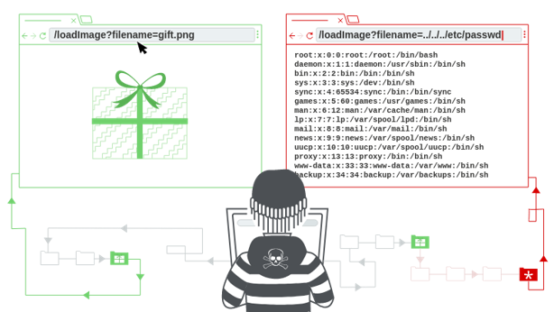
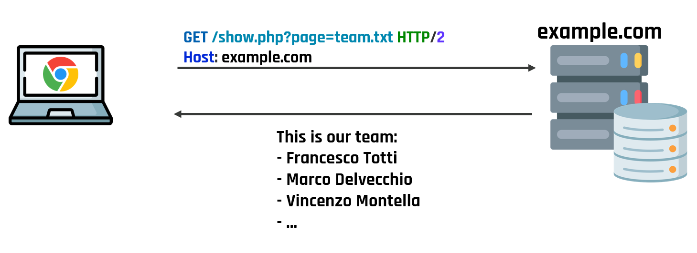
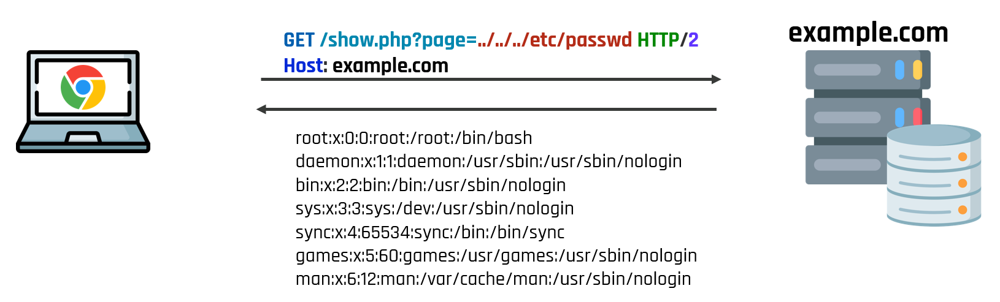

<!-- .slide: data-state="front hide-controls" --> <div id="title">Path Traversal</div> <div id="subtitle">Data Privacy and Security</div> <div id="date">Data Science and Management (DASMA)</div> --- ## Path Traversal in a Nutshell <div class="content-center"> <div class="cell-center"> <p></p> </div> <br/> </div> --- ## Example of a Path Traversal Attack <div class="content-center"> ```php <?php echo file_get_contents("pages/" . $_GET["page"]); ?> ``` <div class="fragment" data-fragment-index="1"> Consider a web server whose webroot is /var/www/html (standard location on Linux servers) - The webroot is the topmost directory in which the files of a website are stored - Files outside the webroot are not accessible </div> <div class="fragment" data-fragment-index="2"> The webroot contains the file show.php above and a directory pages containing some text files that can be included by the PHP script </div> </div> --- ## Intended Usage <div class="content-center"> <p></p> </div> --- ## Attack <div class="content-center"> Root cause of the problem: The user input provided through via page variable is not (correctly) filtered! Attacker can “climb up” multiple levels in the directory hierarchy (and exit the webroot) by using ../ (Linux) or ..\ (Windows) and get access to any file on the web server (sensitive operating system files, TLS keys, etc.) <p></p> </div> --- ## Preventing Path Traversals <div class="content-center"> - Ideally: don’t use user controlled input as (part of) filenames - In the real world: Validate all user inputs! - If possible, allow only a (static) list of file paths - Otherwise, compute the canonical path of the required file and ensure it is not outside the webroot (or the expected directory) ```php <?php $pdir = "/var/www/html/pages/"; $file = realpath($pdir . $_GET["file"]); if ($file !== false && strncmp($file, $pdir, strlen($pdir)) === 0) { echo file_get_contents($file); } else { echo "Error: invalid input"; } ?> ``` </div> --- ## Preventing Path Traversals - Defense in Depth <div class="content-center"> Reduced privileges of web server - Restrict access of web server to its own directory - Use sandbox environment (chroot jail, SELinux, containers,…) to enforce boundary between web server and the OS <div class="fragment" data-fragment-index="1"> This is a so-called defense-in-depth mechanism: it is a good idea to deploy it, but it should not be the only adopted defense mechanism! </div> </div> --- ## Important directories <div class="content-center"> <div class="fragment" data-fragment-index="1"> - **Document Root**: folder in Web server designated to contain Web pages synonymous: start directory, home directory, web publishing directory, remote root etc. typical names of document root: htdocs, httpdocs, html, public_html, web, www etc. </div> <div class="fragment" data-fragment-index="2"> - **Server Root**: Contains logs & configurations. A few scripts put here their working directory </div> </div> --- ## File permissions <div class="content-center"> Be aware of permissions given to directories. In particular: - document root, containing HTML documents - server root, containing log & configuration files; often CGI scripts run here - the Common Gateway Interface (CGI) is a standard (RFC3875) that defines how Web server software can delegate the generation of Web pages to a console application. Such applications are known as CGI scripts; they can be written in any programming language, although scripting languages are often used <div class="fragment" data-fragment-index="1"> It is a good idea to purposely define user and group for the web server - e.g., `www` & `wwwgroup` - HTML authors should be added to `wwwgroup` - the www should have access only to the right files </div> </div> --- ## Other configurations <div class="content-center"> Web servers may have additional capabilities, that can increase the risk - automatic directory listing: an attacker can see the content of directories… what it we have left some sensitive data (e.g., our editor has left a temp copy of our PHP file?), symbolic links, development logs, source code control directories. - symbolic link following: it may allow an attacker to access unexpected directories - server side include (SSI): “.shtml” dynamic pages in the 90s… directives for including other files and executing commands. Still enabled somewhere. - user maintained directory: Still used in several organization, e.g., `example.com/~user` </div> --- <!-- .slide: data-state="break-blue hide-controls" --> # Fun With Flags <div class="content-center"> Web Challenge 01 </div> --- ## Fun With Flags <div class="content-center"> ```php <?php highlight_file(__FILE__); $lang = $_SERVER['HTTP_ACCEPT_LANGUAGE'] ?? 'ot'; $lang = explode(',', $lang)[0]; $lang = str_replace('../', '', $lang); $c = file_get_contents("flags/$lang"); if (!$c) $c = file_get_contents("flags/ot"); echo '<img src="data:image/jpeg;base64,' . base64_encode($c) . '">'; ``` </div> --- ## Analysis <div class="content-center"> The application wants to show a flag based on the user’s language The user’s language is sent by the browser with header HTTP_ACCEPT_LANGUAGE The flag is retrieved from the flags directory. If missing, a global flag is used. To prevent problems, `../` is replaced with "" <div class="fragment" data-fragment-index="1"> <div class="alert alert-warning">What can go wrong?</div> </div> </div> --- ## Problems <div class="content-center"> - HTTP_ACCEPT_LANGUAGE is under the client control, hence it can be modified - there is input sanitization on the value of this header but it is not very effective - the value is used to access a path on the server - hence, there is a user-controlled input that is used to build a file path - the user can access any file that is accessible by the web server </div> --- <!-- .slide: data-state="break-blue hide-controls" --> # HappySharedHostingWithSQLite <div class="content-center"> Web Challenge 04 </div> --- ## HappySharedHostingWithSQLite <div class="content-center"> ```php <?php highlight_file(__FILE__); $ver = SQLite3::version(); echo '<br />'; echo $ver['versionString'] . '<br />'; echo $ver['versionNumber'] . '<br />'; $db = new SQLite3('file.db'); $tablesquery = $db->query("SELECT name FROM sqlite_master WHERE type='table';"); while ($table = $tablesquery->fetchArray(SQLITE3_ASSOC)) { echo $table['name'] . '<br />'; } ?> ``` 3.27.2 3027002 Users </div> --- ## Analysis <div class="content-center"> The application show some data from a database. The database is SQLite (all the information is contained in a single file). There is no user input possible. <div class="fragment" data-fragment-index="1"> <div class="alert alert-warning">What can go wrong?</div> </div> <div class="fragment" data-fragment-index="2"> <div class="alert alert-recall">Where is the database stored?</div> </div> </div>